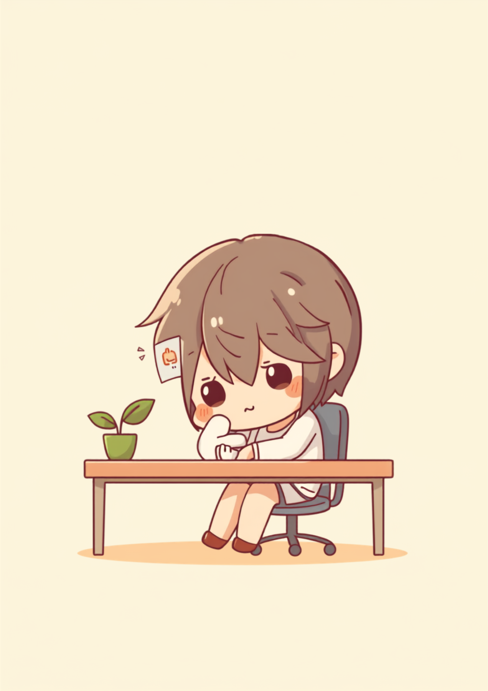
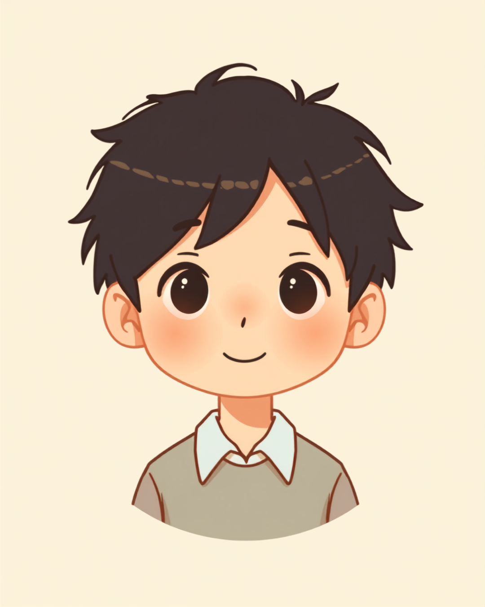

「元気ないね」と言われるたび、笑って誤魔化す。性格と間違えられる病気
就労支援の現場で関わってきた中で、この病気のある方から繰り返し聞いてきた言葉があります。「元気ないね、大丈夫?」と聞かれるたびに、「あ、大丈夫です、そういう性格なんで」と反射的に笑って流してしまう、というものです。本人としては嘘をついているつもりはありません。物心ついたころからずっとこの重さと一緒に過ごしてきたので、これが自分の「性格」だと本気で思い込んでいる方も少なくないようです。
やっかいなのは、気分変調症のある方の多くが、見た目には普通に仕事をこなせてしまうという点です。遅刻も欠勤もせず、締切も守れる。だからこそ周囲からは「安定してるタイプ」「感情の起伏が少ない人」というポジティブな評価すら受けることがあります。本人の内側では毎日薄い膜がかかったような重さと戦っているのに、その努力は誰にも気づかれないまま、ただ「そういうキャラの人」として処理されてしまうのです。
「気分変調症って診断されたのは28歳のときですけど、たぶん高校生くらいからずっとこの調子だったと思います。会社では『気分の浮き沈みが少ない、安定してるタイプだね』って言われることもあって、いや浮き沈みがないんじゃなくて、ずっと沈んだままなんですけど…って心の中で思ってました。正直、11年間くらい『これが普通のテンションなんだ』と思い込んでたので、診断されたときはショックというより『え、これ普通じゃなかったの』って拍子抜けした感じでした。」

2年以上続く「どんより」の正体。うつ病との違いと、気づきにくい理由
気分変調症は、うつ病と症状が重なる部分が多いとされていますが、大きな違いは症状の重さと続く期間にあると言われています。うつ病は無気力感などの症状が2週間以上続くと診断される一方、気分変調症は比較的軽い抑うつ状態が2年以上続くことが目安とされています。症状としては、集中しづらさ、決断のしづらさ、疲れやすさ、自分に対する自信のなさなどが挙げられることが多いようです。
もう一つ気づきにくくしている理由があります。気分変調症は数日から数週間の調子の良い時期を挟むこともあるとされ、「ちゃんと元気な時期もあるから、やっぱり性格の問題では」と自分でも納得してしまいやすいのです。しかし、良い時期を挟みながらも全体として2年以上どんよりとした状態が続いているなら、それは性格ではなく治療の対象になりうる状態だと考えられています。
「入社3年目くらいで、先輩に『お前、覇気ないよな』って半分冗談みたいに言われ続けてたんですけど、そのたびに愛想笑いでごまかしてました。でも実際はやる気がないんじゃなくて、朝起きた瞬間から体に薄い膜がかかってるみたいな感じがずっと抜けなくて。病院に行ったのも『さすがにこれ2年続くのおかしいよな』って思ったのがきっかけで、行くまでにさらに半年くらいかかりました。今思うと、あの半年は完全に無駄に苦しんでた気がします。」
職場にどう伝える、「甘え」と誤解されないための具体的な伝え方
気分変調症は、うつ病のように急に休職するというより、じわじわと長く付き合っていく病気だとされています。だからこそ職場では「休むほどではないけど、本調子でもない」という中途半端な状態が長く続き、周囲には「本人のやる気の問題」と受け取られやすくなってしまいます。
具体的な場面に絞って伝えるという考え方
診断名や症状の仕組みをすべて説明しようとすると、かえって伝わりにくくなることがあります。業務に関わる具体的な場面だけに絞って伝える方法が、双方にとって負担が少ないとされています。
- 「気分の波があり、朝は特に集中しづらい時間帯があります」
- 「大きな決断が必要な場面では、少し時間をもらえると助かります」
- 「元気がなさそうに見えても、体調が悪いわけではないことが多いです」
- 「声をかけてほしいのは明らかに様子がおかしいときで、普段は気にしなくて大丈夫です」
信頼できる上司や人事担当者に、業務に関わる範囲でまず共有し、そこから必要な情報だけチームに広げてもらうという進め方をとっている方もいるようです。「性格だから仕方ない」と諦める前に、一度だけでも具体的な困りごとを言葉にしてみることが、長年の思い込みを見直すきっかけになる場合があります。
使える制度と、一人で抱えないための相談先
精神障害者保健福祉手帳という選択肢
気分変調症を含む精神疾患のある方は、精神障害者保健福祉手帳の対象となる場合があります。等級は症状や日常生活への影響の程度によって異なるため、詳しくは主治医や自治体の障害福祉窓口に確認するのが確実です（2026年8月時点の情報です）。手帳を取得すると、障害者雇用枠での就職や、企業側の合理的配慮を前提にした働き方を選びやすくなる場合があります。
自立支援医療（精神通院医療）制度
気分変調症を含む精神疾患の治療で通院を継続する場合、自立支援医療制度を利用すると、通院にかかる医療費の自己負担が原則1割に軽減される場合があります（2026年8月時点の情報です）。治療が長期にわたることも多いとされているため、経済的な負担を減らす手段として知っておくと安心です。
相談できる窓口
- 精神科・心療内科（症状の記録や、働き方についての意見書の相談）
- 職場に選任されている産業医（50人以上の事業場に選任義務あり）
- 自治体の障害福祉窓口、精神障害者保健福祉手帳の相談窓口
- 就労移行支援事業所（体調管理を含めた就労準備や職場との調整）
よくある質問
関連記事
この記事に、聞いてみたいことはありますか？
「自分の場合はどうなんだろう」と思ったことを、気軽に書いてみてください。いただいた質問は個別にお返事したうえで、匿名で記事にすることがあります。
mimemime代表。就労支援の現場経験をもとに、障がいのある方の働く不安に寄り添う記事を執筆。